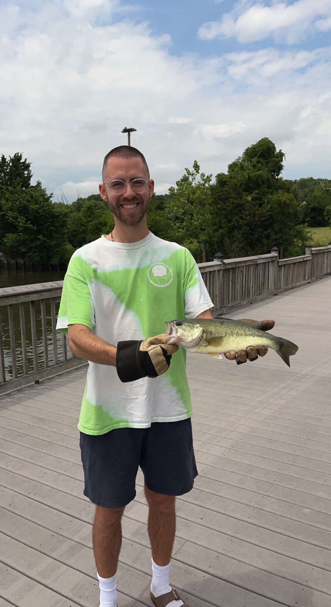
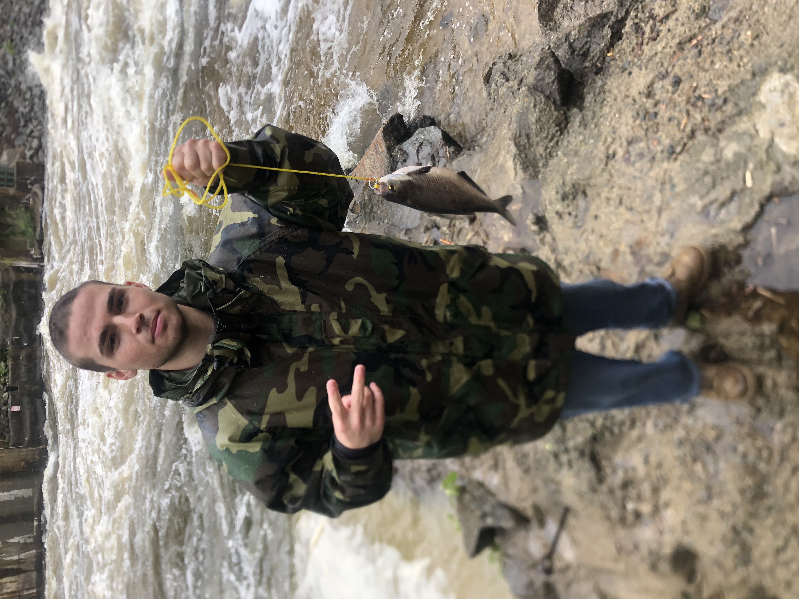
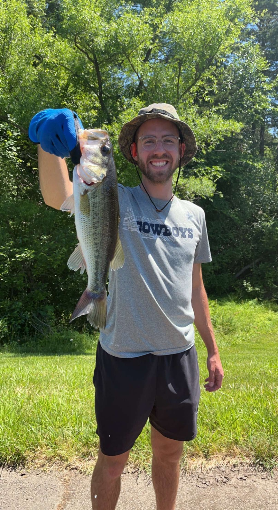

a picture is worth a thousand words. i'll give you both.
Something's in the Water...
Word around town was that Fort Belvoir was a hidden gem for bass fishing. Meathead and I decided to swing by and check it out. After parking close by the shore, we walked out onto the pier to observe our surroundings. The clouds blocked the heat of the sun, and the breeze was blowing hard. As we peered over the pier, we saw many things. A log, some aquatic grass. Then something caught Meathead's eye. There was a fish carcass within 20 yards of the shore. And another close to that one. Yet another close to the second. We saw more than 6 catfish carcasses annihalated and left to rot. We thought, "It must have been some deranged fisherman who caught them, killed them, and threw them back". We forgot about it and went back to our business. We threw our lures for around 20 minutes before I got a bite. I reeled in a medium sized bass (pictured). We went back to business. While twitching my line in, I noticed a spotted fish coming towards the surface for a few seconds, only to vanish below it again. It never broke the surface. I told Meathead and we started brainstorming what it could be. Again, the mysterious fish revealed itself only a few inches below the surface. Even though we were prepared to observe it this time, we still couldn't get a solid view of it. After doing a bit of fish research, we realized that we were seeing a spotted gar. A grail of a fish for lowly bass hunters like us. We spent the rest of our day trying to find some bait or lure to entice it, to no avail. Nevertheless it was exciting to see our first gar.
Night of a Thousand Shad
The day was gloomy. It was raining cats and dogs. My fishing buddy and I had just bought some new waterproof jackets, perfect for situations like this. So we ventured out to put our jackets to the test. After a short drive, we wound up in Old Town Occoquan, fishing under a footbridge over Little Occoquan Run. The bites were slim to none, so took a hike up over the footbridge to a new spot. The grass on the way was spattered with brown mud, drowning in puddles. The ground was slippery. We wound up on a large rock formation right on the edge of the river. The water crashed over submerged boulders and whipped around surfaced ones. We casted out. The rain was so loud we could only hear each other by yelling. I had luck with a single bite, and reeled in a hickory shad. Things slowed down for a long time. Eventually, we realized that dozens of shad were swimming into an inlet nearby, either to escape the ravaging waters or to chomp on other fish with that same idea. We began casting into this fishing bowl and reeled a couple in. My meathead fishing buddy grew impatient, and whipped out the butterfly net we had jokingly brought along. Meathead carefully waded into the inlet and began swiping the water back and forth with the net. Before long, he reached a count of 15 shad caught by net! What a good way to break in our new rain coats.
You have the Right to Remain Silent
The summer sun was beating down, the temperature was just starting to rise in the beginning of summer. The usual bass hot spots were not yielding any hits. Meathead and I picked up a tip from a local kid who advised we check out another small pond down the road. Of course, Meathead and I ventured to check it out. On the way there, a couple of my friends called wanting to join the fishing fun for the day. So we all met at this new, lowkey spot. Meathead and I arrived first, and had the place to ourselves for about half an hour. In that time I reeled in 3 bass, and Meathead pulled in 1. This place was a gold mine, rarely fished if ever. Soon, our other friends arrived. They got the chance to throw out no more than 5 times each before a police officer arrived at the scene. The officer was polite. He explained to us that this pond was a no fishing zone, so we had to leave. He saw us out, and he allowed me to keep the bass in my bucket to take home and cook. Although we took a major loss by being kicked out of the spot, I saw it as a net positive since I was able to bag 4 bass in 40 minutes.
First Catfish! Almost.
Another day at the Fort Belvoir pier. This time, we felt the heat cooking our fair skin. Blinding light beamed off the water's surface. I could feel something special in the air. Meathead and I got straight to fishing. We fished around the pier for some baitfish, and I caught a perch. I chopped the perch up and threw a piece out on my catfish pole. It was time to wait for a catfish bite. Caught a crappie, and a tiny bass in the meantime. Before I knew it, the fellow fishermen near my catfish pole let me know I had something. I ran over to the pole and started fighting it. I was very excited. Whatever was on the end of this line, was big. Probably my biggest fish yet. After a minute or two of pulling it in, I managed to pull it up to the pier's edge. You can see the climax of this catch on the video above!